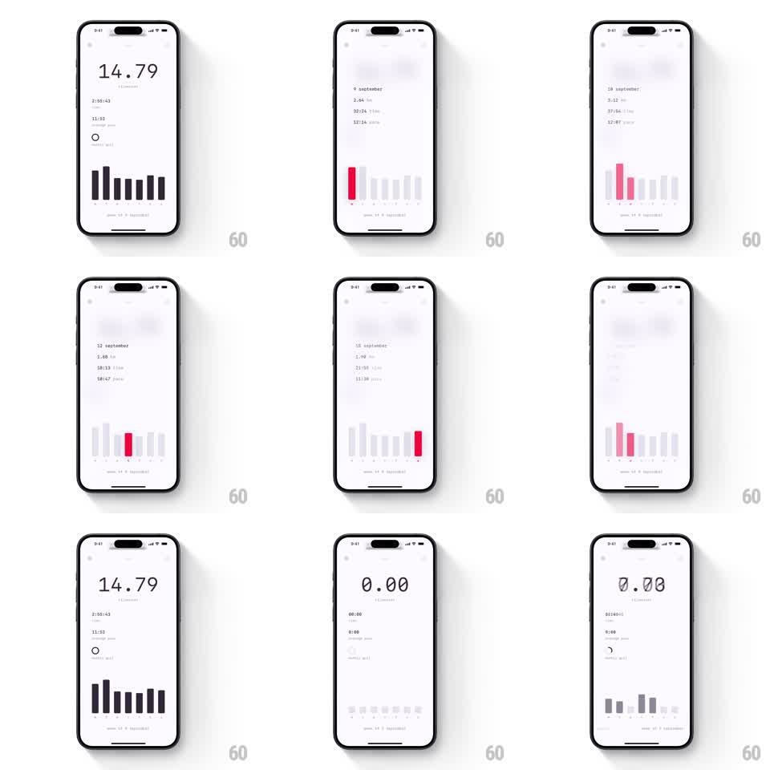

Media
Frame-by-frame

Rebuild this interaction 1:1: a minimal fitness stats screen where scrolling between days directionally blurs the content, the big kilometer total rolls like an odometer, and the 7-day bar chart springs the selected day's bar into a red highlight.

Rebuild this interaction 1:1: a minimal fitness stats screen where scrolling between days directionally blurs the content, the big kilometer total rolls like an odometer, and the 7-day bar chart springs the selected day's bar into a red highlight. ## Integration Integration: stack-agnostic spec - springs given as stiffness/damping, timed motions as duration + curve; map every value to your framework and animation library of choice. ## Scene White stats screen: huge "14.79" with "kilometers" label, small rows (time, average pace), a "0 Km Goal" circle, and a 7-day bar chart (gray bars, selected day red, day letters below). Other days show sparse states (0.00 with empty chart). ## Motion spec Pattern: swipe day-to-day with directional blur + odometer digits + springy bars. - Horizontal swipe: the whole stats block blurs in the drag direction (motion blur ~8px) while translating (~300ms, ease-out), unblurring as the new day lands. - Big number: digits roll vertically like an odometer - each digit column spins to its new value with a slight per-column stagger (30ms), ~400ms total. - Bar chart: bars rescale to the new day's data (spring ~280/24, 25ms stagger left-to-right); the selected day's bar turns red and grows with a small overshoot. - Stat rows (time, pace) crossfade with a 6px rise, trailing the number by ~100ms. - Empty days roll everything to 0.00 and fade bars to a flat baseline. ## Calibration - Blur direction must match swipe direction - a leftward swipe smears left. - Odometer rolls the SHORT way (0->9 wraps up through 1, not down through 8). ## Reduced motion Content crossfades; digits swap; bars tween height only. ## Don't miss - Red always marks exactly one bar - the selected day. - The chart's baseline and day letters never move; only bar heights and color change.